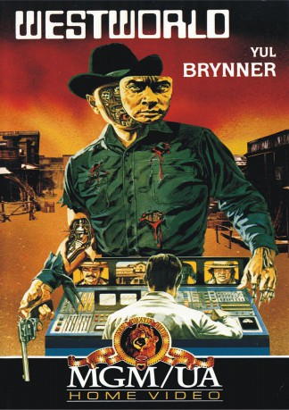

#988 Westworld
 gesehen am 06.05.2015
gesehen am 06.05.2015
 
 IMDB-Wertung: 7.0 / 10
IMDB-Wertung: 7.0 / 10  Metascore: 77
Metascore: 77 
Im Erlebnispark Delos sind Epochen der Weltgeschichte nachgebaut und von Robotern bevölkert. Peter (Richard Benjamin) und John (James Brolin) buchen den Wilden Westen. Als dem Revolverhelden-Roboter Gunslinger (Yul Brynner) die Sicherungen durchbrennen, wird wirklich scharf geschossen…
Jahr: 1973
Dauer: 88 Minuten
FSK: 16
Land: USA Studio: Metro Goldwyn MayerTonspuren: DD1.0 - ,
Untertitel:
Auflösung: 1080p (1920x800) Größe: 6707 MB
Genre: Action, Sci-Fi, Thriller, Western
Regisseur: Michael Crichton
Drehbuch: Michael Crichton
Soundtrack: Fred Karlin
Darsteller:
 Yul Brynner als Gunslinger
Yul Brynner als Gunslinger- Richard Benjamin als Peter Martin
 James Brolin als John Blane
James Brolin als John Blane- Norman Bartold als Medieval Knight
 Alan Oppenheimer als Chief Supervisor
Alan Oppenheimer als Chief Supervisor Dick Van Patten als Banker
Dick Van Patten als Banker Steve Franken als Technician
Steve Franken als Technician Majel Barrett als Miss Carrie
Majel Barrett als Miss Carrie- Richard Roat als Technician
- Jared Martin als Technician
- Robert Hogan als Delos Guests' Interviewer , uncredited
- Mindi Miller als Girl in Saloon , uncredited
- Victoria Shaw als Medieval Queen
- Linda Gaye Scott als Arlette
- Michael T. Mikler als Black Knight
 Terry Wilson als Sheriff
Terry Wilson als Sheriff- Anne Randall als Daphne
- Julie Marcus als Girl in Dungeon
- Sharyn Wynters als Apache Girl
- Anne Bellamy als Middle Aged Woman
- Chris Holter als Stewardess
- Charles Seel als Bellhop
- Wade Crosby als Bartender
- Nora Marlowe als Hostess
- Lin Henson als Ticket Girl
- Orville Sherman als Supervisor
- C. Lindsay Workman als Supervisor
- Lauren Gilbert als Supervisor
- Davis Roberts als Supervisor
- Howard Platt als Supervisor
- Kenneth Washington als Technician
 Robert Patten als Technician
Robert Patten als Technician- David M. Frank als Technician
- Kip King als Technician
- David Man als Technician
- Larry Delaney als Technician
- Will J. White als Workman
- Ben Young als Workman
- Tom Falk als Workman
- Robert Nichols als 1st Male Interviewee , uncredited
 Leoda Richards als White-Haired Woman on Elevator , uncredited
Leoda Richards als White-Haired Woman on Elevator , uncredited- Paul Sorensen als 2nd Male Interviewee , uncredited
Datei: X:\2-Dilogie(N-Z)\Westworld-Futureworld\Westworld (1973, FSK16, 1920x800).mkv seit 03.05.2015
Festplatte: HD Collection-2(A-Z)-3(A-M)
 Alle Filme aus Gruppe '2-Dilogie(N-Z)\Westworld-Futureworld'
Alle Filme aus Gruppe '2-Dilogie(N-Z)\Westworld-Futureworld'